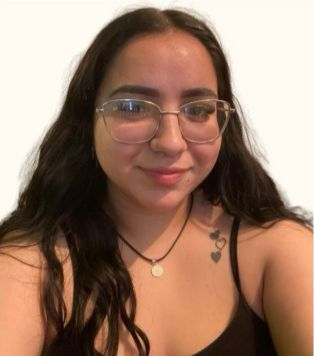

¡Hola! Soy Dafhne
Mi nombre es Dafhne Carolina Sáenz García y soy estudiante de la Institución Benemérita y Centenaria Escuela Normal del Estado de Chihuahua (IByCENECH), ubicada en Río Sacramento y, Río Florido S/N, Junta de los Ríos, 31300 Chihuahua, Chih. Actualmente curso el sexto semestre de la Licenciatura en Educación Preescolar, preparándome para ser una educadora comprometida con el desarrollo integral de los niños.
Institución: IByCENECH
Programa: Licenciatura en Educación Preescolar
Semestre actual: Sexto
Mi experiencia
Desde el tercer semestre he tenido la oportunidad de asistir a diversas jornadas de práctica docente, en las cuales he adquirido valiosas experiencias trabajando directamente con grupos de educación preescolar. Cada jornada ha fortalecido mi vocación, reafirmando mi entusiasmo por diseñar actividades creativas y significativas que impulsen el aprendizaje de los pequeños.
Me apasiona trabajar con niñas y niños, acompañándolos en sus descubrimientos, apoyándolos en su crecimiento y fomentando su amor por el conocimiento. Actualmente realizo mis prácticas profesionales con un grupo de primer año de preescolar, donde he podido aplicar y adaptar estrategias didácticas que promueven el juego, la exploración y la construcción de aprendizajes.
Mi filosofía educativa
Cada experiencia dentro del aula me motiva a seguir formándome como una educadora sensible, reflexiva y comprometida con brindar espacios de aprendizaje afectivos, seguros y enriquecedores.
Espero que este blog sirva de apoyo y guía para otras maestras en formación, brindándoles ideas sobre diversos materiales didácticos, sus tipos, características y el propósito lúdico que cumplen en el aula. El uso consciente y creativo de los materiales no solo fortalece el aprendizaje, sino que también transforma la experiencia educativa en algo significativo y memorable para los niños.
El uso consciente y creativo de los materiales didácticos transforma la experiencia educativa en algo significativo y memorable para los niños.